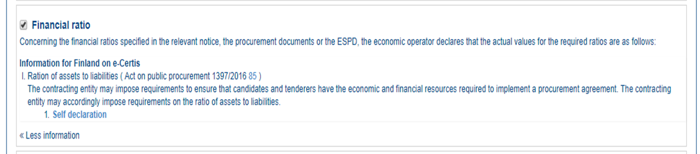

VI.5.1 Basic financial ratios
Mock-up - contracting authority perspective
The contracting authority has selected the financial ratio as one of the selection criteria that will go into the ESPD Request document:

Figure 1. Basic 'financial ratio' CA mock-up
Mock-up - economic operator perspective
The economic operator has to respond with the numeric value corresponding to the financial ratio and with a description to identify the type of ratio:

Figure 2. Basic 'financial ratio' EO mock-up

XML Example - Basic
Basic Basic 'financial ratio' criterion
<!... header elements removed for brevity -->
<!-- Criterion:Financial ratio -->
<cac:TenderingCriterion>
<cbc:ID schemeID="CriteriaTaxonomy" schemeAgencyID="EU-COM-GROW" schemeVersionID="2.1.1">e4d37adc-08cd-4f4d-a8d8-32b62b0a1f46</cbc:ID>
<cbc:CriterionTypeCode listID="CriteriaTypeCode" listAgencyID="EU-COM-GROW" listVersionID="2.1.1">CRITERION.SELECTION.ECONOMIC_FINANCIAL_STANDING.FINANCIAL_RATIO</cbc:CriterionTypeCode>
<cbc:Name>Financial ratio</cbc:Name>
<cbc:Description>Concerning the financial ratios specified in the relevant notice, the in the ESPD, the relevant notice or or the ESPD, the economic operator declares that the actual values for the required ratios are as follows:</cbc:Description>
<cac:Legislation>
<cbc:ID schemeID="CriteriaTaxonomy" schemeAgencyID="EU-COM-GROW" schemeVersionID="2.1.1">7a182b9e-4c3f-4087-a3ae-9a3791ecd713</cbc:ID>
<cbc:Title>[Legislation title]</cbc:Title>
<cbc:Description>[Legislation description]</cbc:Description>
<cbc:JurisdictionLevel>EU</cbc:JurisdictionLevel>
<cbc:Article>[Article, e.g. Article 2.I.a]</cbc:Article>
<cbc:URI>http://eur-lex.europa.eu/</cbc:URI>
<cac:Language>
<cbc:LocaleCode listID="LanguageCodeEU" listAgencyName="EU-COM-GROW" listVersionID="2.1.1">EN</cbc:LocaleCode>
</cac:Language>
</cac:Legislation>
<cac:TenderingCriterionPropertyGroup>
<cbc:ID schemeID="CriteriaTaxonomy" schemeAgencyID="EU-COM-GROW" schemeVersionID="2.1.1">83e3dcc4-c9b3-47e5-9fb8-ffd8386679f1</cbc:ID>
<cbc:PropertyGroupTypeCode listID="PropertyGroupType" listAgencyID="EU-COM-GROW" listVersionID="2.1.1">ON*</cbc:PropertyGroupTypeCode>
<cac:SubsidiaryTenderingCriterionPropertyGroup>
<cbc:ID schemeID="CriteriaTaxonomy" schemeAgencyID="EU-COM-GROW" schemeVersionID="2.1.1">e9aa7763-c167-4352-8060-1a3d7d3e2662</cbc:ID>
<cbc:PropertyGroupTypeCode listID="PropertyGroupType" listAgencyID="EU-COM-GROW" listVersionID="2.1.1">ON*</cbc:PropertyGroupTypeCode>
<cac:TenderingCriterionProperty>
<cbc:ID schemeID="CriteriaTaxonomy" schemeAgencyID="EU-COM-GROW" schemeVersionID="2.1.1">a749f03a-abde-4e95-b999-fed640ff96e4</cbc:ID>
<cbc:Name/>
<cbc:Description>Please provide your ratios</cbc:Description>
<cbc:TypeCode listID="CriterionElementType" listAgencyID="EU-COM-GROW" listVersionID="2.1.1">QUESTION</cbc:TypeCode>
<cbc:ValueDataTypeCode listID="ResponseDataType" listAgencyID="EU-COM-GROW" listVersionID="2.1.1">DESCRIPTION</cbc:ValueDataTypeCode>
</cac:TenderingCriterionProperty>
</cac:SubsidiaryTenderingCriterionPropertyGroup>
</cac:TenderingCriterionPropertyGroup>
</cac:TenderingCriterion>
<!... rest of elements removed for brevity -->